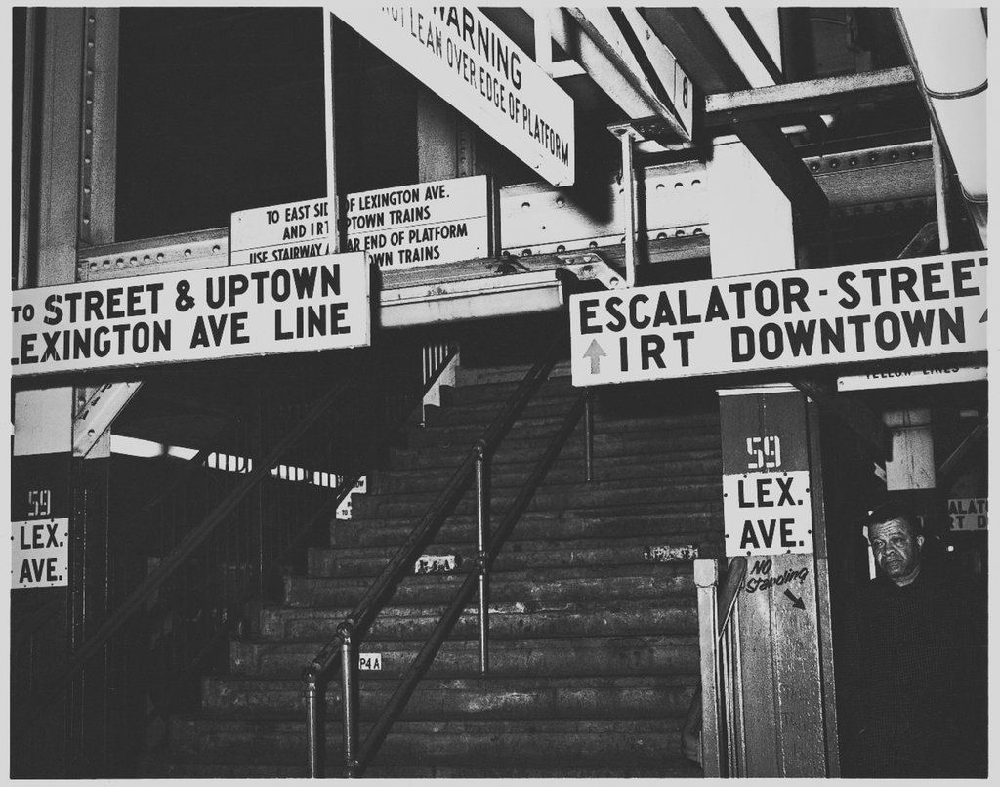
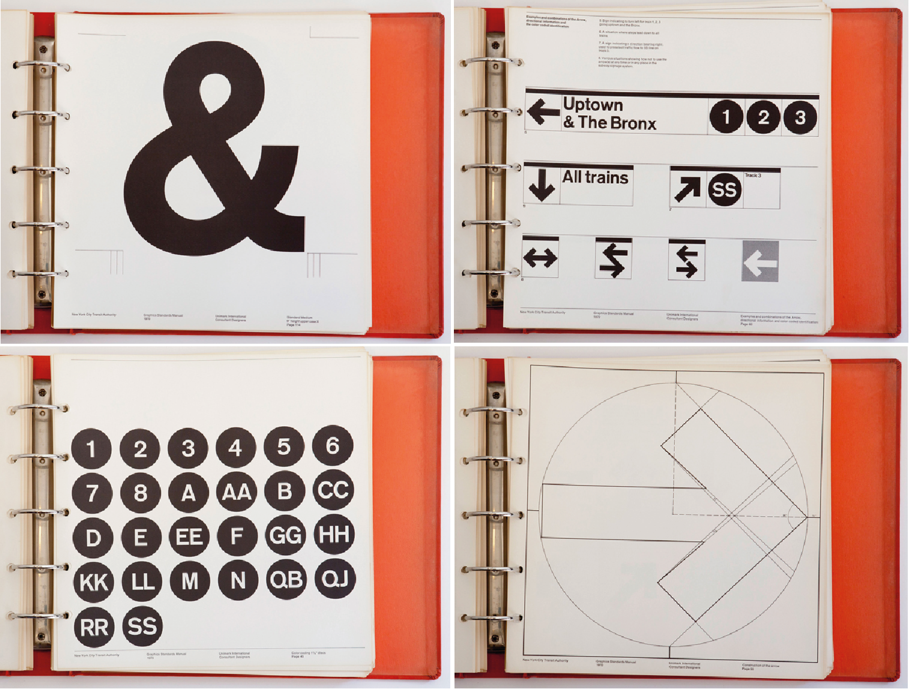
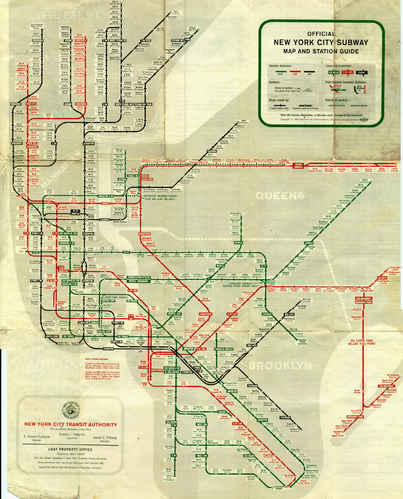
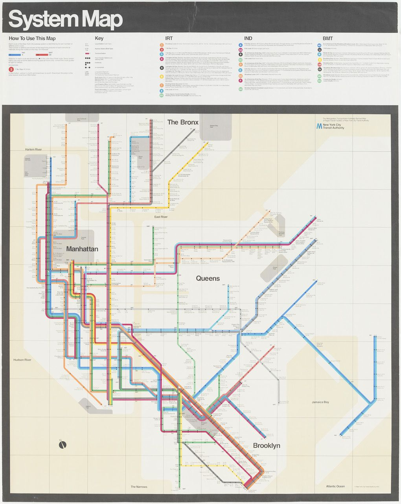
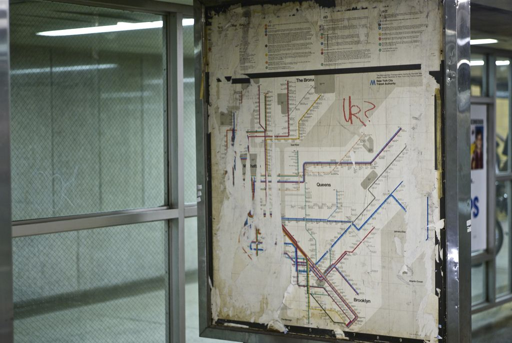
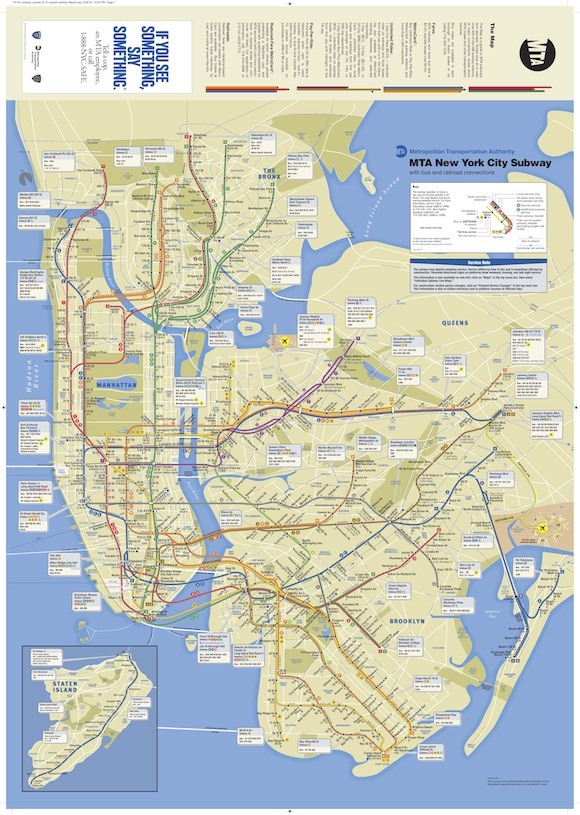

Until the 1960’s navigating the New York Subway System was chaotic to say the least. It was scattered with inconsistent, miss-matching signage which made it very hard to navigate with no real pattern or logic behind its design. This was because over the years different companies had provided the signage, leaving different sizes, typefaces and abbreviations.
The Need for Change
Until the 1960’s navigating the New York Subway System was chaotic to say the least. It was scattered with inconsistent, miss-matching signage which made it very hard to navigate with no real pattern or logic behind its design. This was because over the years different companies had provided the signage, leaving different sizes, typefaces and abbreviations.
NYC subway pre Vignelli, 1965.
Due to the existing design in which there seemed no logic, Massimo Vignelli and his partner Bob Noorda, who had just established ‘Unimark International’ design consultancy, could not use existing principles within the new design system and had to start afresh.
“The designers would need to understand what billions of people were looking for, where they would look for it and, ultimately, provide it, in the least confusing way possible.”
Vignelli was focused on how the subways new signage and map design should be experienced.
“They were moving towards something more closely related to the user experience design that goes into the smartphone apps of today, rather than just a simple poster illustration or logo design.”
Although Vignelli knew the new design system had to have a great user experience he found converting this into reality was a harder issue to overcome.
Top
The Designs
Vignelli started from the beginning. ‘Why did people take the subway?’, because it got them to where they needed to go. His deep research into this resulted in the ‘New York City Transit Authority Graphics Standards Manual’ which was published in 1970. The manual was a sort of rule book for everything design- related for the entire subway. The 180 page binder outlines a vision of signage intended not just to be aesthetically pleasing but to simplify navigation. Vignelli stated that,
“The subway rider should be given only information at the point of decision’.
The success of this vision is the longevity of the signage Vignelli designed.
Vignelli gave the system a sans- serif typeface; Helvetica, its colour-coded disks and its modular signage. Some things have changed in the last fifty years, signs now feature white lettering on black as opposed to Vignelli’s prescribed black on white. However if anything the current signage is a slight under- design of Vignelli's model.
The New York City Transit Authority Graphics Standards Manual.
On his iconic signage in an interview with Gary Hustwit, Vignelli was asked…
“Your signage is still in use right?… It’s still in use. This was 1966 so it’s over 40 years”
Here we can see an insight into the role of Vignelli’s good design and how it directs the city to this day.
To put the new design system together Vignelli designed a new map to navigate it in 1972. Before 1940, the subway system was made up of three companies: Interborough Rapid Transit (IRT), Brooklyn Manhattan Transit(BMT) and Independent Subway System (IND). Each had its own map in its own style. Another map, used in the 1950’s, combined all three, with each on in a different colour. Vignelli wanted to simplify this.
1959 system map.
Vignelli’s 1972 map is considered to be one of the most iconic pieces in the history of graphic design. Within this new map Vignelli replaced the geographically accurate train routes with more simplistic bold spaghetti like bands of colour that turned at 45- and 90-degree angles, a similar design had been and is still used in London and had worked well.
Each route was colour-coded, The 1 line was orange, the A line blue and the G line was light green. The stops on the map were indicated by black dots. In his own words,“Every line has a colour” and “No dot, no stop”. Vignelli wanted to make using the subway as seamless as possible, a process he called going from “dot to dot”. The land, Manhattan, Queens, Brooklyn and the Bronx would be shown in white. The Hudson River, the East River and the Atlantic would be brown. The map was simple with not much writing on it. Vignelli smoothed and redrew the c and e, he also curved the uppercase r. Furthermore he adjusted the spaces in between the letters to help legibility. The streets and landmarks were not included. Vignelli decided it would only show what was necessary and only what would help people figure out how to get to the location they wanted. Two years after the project began, the map was finished. Posters where in every station and pocket- sized versions were available for passengers to carry.
The iconic 1972 NY subway map.
Now Vignelli hoped that people would always know where they were going. Vignelli when talking about his map described it as
“The most beautiful spaghetti work ever done.”
Perhaps indicating he saw it as ahead of its time.
Examples of the map when it was in use can still be seen in station today.
Elegant but Flawed
The geographical liberties that were taken within the newly design map didn’t sit well with New Yorkers, who couldn’t come to terms with its modernist layout. Vignelli stated that the
“people couldn’t relate geography with the stations/lines” saying that they “shouldn’t have”.
However it gained admiration from the design community in which Vignelli recognised as he went on to say that the
“fact of the matter is that fifty percent of humanity is visual orientated and fifty percent is verbally orientated.” also stating that “todays map is a total disaster, fragmentation all over the place”
which effected its legibility. Indicting that Vignelli himself thought his map was a better design as it had nothing to fragment legibility.
Todays subway map.
His Legacy
The map Vignelli designed is in a collection in the Museum of Modern art and is featured in exhibitions. In 2008 Vignelli was asked to come up with a limited edition version of his map which sold out almost immediately . The designs Vignelli created for The New York Subway were so revolutionary that the signage is still used until this day (bar slight changes) and although the map was designed in the pre- computer era it is still being used digitally on the MTA’s ‘the weekender website’ to inform the public of service changes caused by maintenance works. The legacy of Vignelli's work was that it created a better user experience for millions of people and his work has come into contact with every single New Yorker. Vignelli’s work refuses to disappear proving it’s timeless and innovative design was ahead of its period.
“FOREVER. If you do it right, it will last forever.”
Top
Bibliography
www.ceros.com/originals/massimo-vignelli-nyc-subway/
https://tmagazine.blogs.nytimes.com/2011/09/16/ahead-of-its-time-an-icon-goes-digital/
https://ny.curbed.com/2015/3/24/9977426/new-insights-from-late-subway-sign-maestro-massimo-vignelli
https://www.citylab.com/design/2013/03/guide-guiding-people-around-subway/4883/
The Great New York Subway Map by Emiliano Ponzi